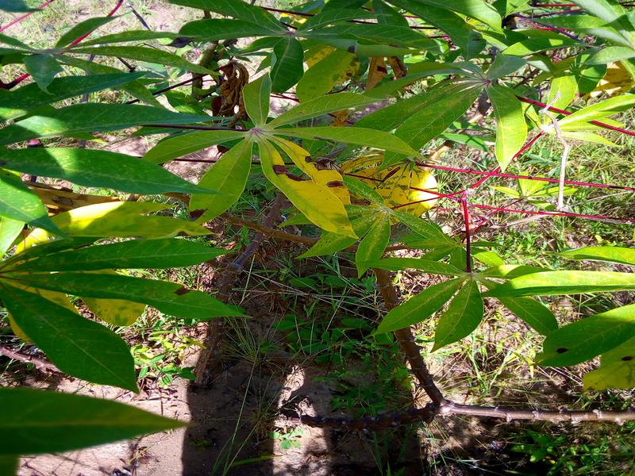
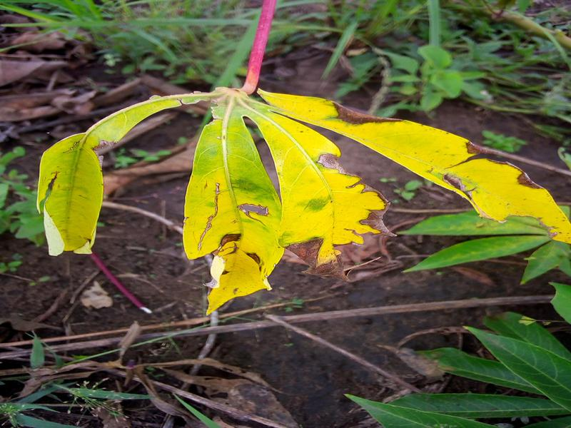

A cassava leaf disease classifier trained two ways on 21,000+ field images across 5 classes — a fine-tuned Vision Transformer in PyTorch, and a YOLOv8 classification model for comparison.
21,397 field-collected leaf images across 5 classes, split 80/20 per class into train/val. One sample per class, straight from the training set:


Source: the Kaggle Cassava Leaf Disease Classification competition dataset.
train/ and val/ folders.torchvision.datasets.ImageFolder loads both splits directly — no CSV or manual label wiring.vit_b_16 backbone (ImageNet-pretrained) gets a fresh linear head zeroed for the 5 target classes, fine-tuned end-to-end with SGD.yolov8n-cls) trains on the identical folder layout, as a faster baseline to compare against.The complete notebook, dataset split script, and README walking through setup and training live in the CassavaLeaf-ComputerVision project.